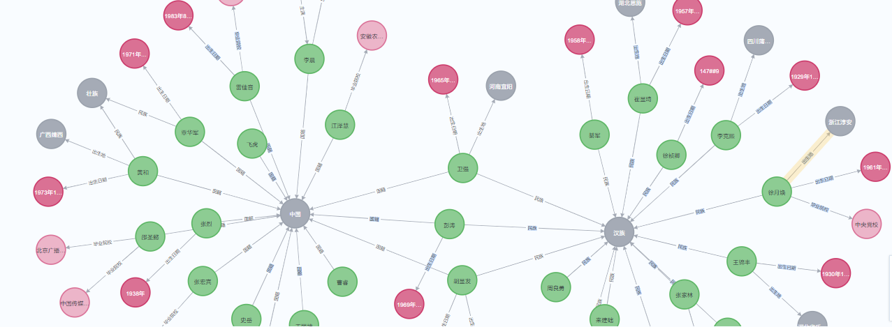

5.3 娱乐数据知识图谱搭建
基于Neo4j图数据库构建知识图谱¶
学习目标¶
- 掌握使用py2neo实现Neo4j图谱构建的方法
- 掌握使用Neo4j图数据库进行关系逻辑查询的方法
本项目娱乐数据知识图谱展现¶

实现娱乐数据知识图谱搭建的基本流程¶
- 第一步：准备数据
- 第二步：编写创建节点的函数
- 第三步：编写创建关系的函数
- 第四步：将SPO数据全部导入Neo4j数据库中
- 第五步：Neo4j图数据库的应用
第一步 准备数据¶
- 文件代码路径：/home/ec2-user/Casrel_RE/relationship_extract/codes/map_display.py
- 首先导入必备工具包
# 导入库
from py2neo import Graph, Node, Relationship
from py2neo import NodeMatcher, RelationshipMatcher
# 导入模型预测方法
from predict import *
from config import *
from tqdm import tqdm
import json
conf = Config()
# 实例化图数据库
# 连接neo4j数据库，输入地址、用户名、密码
graph = Graph('http://127.0.0.1:7474/', auth=('neo4j', '12345'))
# 实例化节点查询对象
node_match = NodeMatcher(graph)
# 实例化关系查询对象
relation_match = RelationshipMatcher(graph)
- 构建第一个函数get_spo()：获取实体类型以及关系类型
# 获取实体类型以及关系类型
def get_spo():
''''
函数功能描述：
1、在正常使用模型预测spo时，因为模型不能第一时间给出subject和object的类型，
因此，这里我们借助训练集中的类型即可
2、如果训练集也没有，可以根据预测关系的类别自己定义比如：出生日期，subject一般为人名，object一般为日期或时间
'''
dict1 = {}
with open(conf.train_data_path, 'r', encoding='utf-8') as fr:
for line in fr.readlines():
line = json.loads(line)
spo_list = line['spo_list']
for spo in spo_list:
if spo['predicate'] not in dict1:
dict1[spo['predicate']] = spo
if len(dict1) == 18:
break
# with open('rel_type.json', 'a', encoding='utf-8') as fw:
# fw.write(json.dumps(dict1, ensure_ascii=False, indent=4))
return dict1
- 构建第二个函数ready_data()：准备SPO数据（附带主、客实体类型、关系类型）
# 根据模型预测spo,准备数据
def ready_data():
'''
通过加载训练好的模型，对需要待预测关系的文本实现预测，并将预测结果存储到文件中
:return:
'''
# 获取包含实体和关系类型的字典
type_dict = get_spo()
# 导入训练好的模型
model_path = '../save_model/last_model.pth'
mymodel = load_model(model_path)
# 读取测试集文档进行预测
with open(conf.test_data_path, 'r', encoding='utf-8')as fr:
lines = fr.readlines()
for line in tqdm(lines):
line = json.loads(line)
# print(line)
sample = line['text']
outputs = model2predict(sample, mymodel)
if len(outputs) == 0:
continue
spo_list = outputs['spo_list']
# print(spo_list)
for spo in spo_list:
if spo['predicate'] in type_dict:
spo['subject_type'] = type_dict[spo['predicate']]['subject_type']
spo['object_type'] = type_dict[spo['predicate']]['object_type']
with open('../data/predict_spo.json', 'a', encoding='utf-8') as fw:
fw.write(json.dumps(spo, ensure_ascii=False) + '\n')
第二步 编写创建节点的函数¶
- 构建第三个函数create_node() ：创建节点
# 创建节点
def create_node(graph, label, attrs):
#第一次：如果你的图数据库之前的数据是没有用的可以直接清空
# graph.delete_all()
# 构建节点的属性，如果一个节点有多个属性要同时判断，所以加上and
condition = ""
for key, value in attrs.items():
condition += '_.%s=' % key + '\"' + value + '\"' + " and "
# 将condition最后的and字符去掉
condition = condition[:-5]
# 根据属性条件查询节点是否已经存在，若存在则返回该节点，否则返回None
value = node_match.match(label).where(condition).first()
# 如果要创建的节点不存在则再创建
if value is None:
node = Node(label, **attrs)
node = graph.create(node)
return node
return None
第三步 编写创建关系的函数¶
- 构建第四个函数 match_node() ：判断节点是否存在
# 使用NodeMatcher查询节点
def match_node(label, attrs):
condition = ""
for key, value in attrs.items():
condition += '_.%s=' % key + '\"' + value + '\"' + " and "
# 将condition最后的 and 字符去掉(注意and前后有两个空格)
condition = condition[:-5]
# 根据属性条件查询节点是否已经存在，若存在则返回该节点，否则返回None。
# 注意加上.first()返回一个节点结果，不加.first()返回所有符合要求的节点结果
value = node_match.match(label).where(condition).first()
return value
- 构建第五个函数 create_relationship() ：创建两节点的关系
# 建立两个节点之间的关系
def create_relationship(graph, label1, attrs1, label2, attrs2, r_name):
value1 = match_node(label1, attrs1)
value2 = match_node(label2, attrs2)
# 判断实体是否均存在，否则无法创建关系
if value1 is None or value2 is None:
return False
# 判断是否已经创建完关系，如果已经创建就不用再重复定义了。当然这一步也可以省略，因为相同实体对创建相同关系时，结果会覆盖
# rel_value = match_relation(node1=value1, node2=value2, r_type=r_name)
# print("rel_value:{}".format(rel_value))
# if rel_value:
# return False
r = Relationship(value1, r_name, value2)
graph.create(r)
第四步 将SPO数据全部导入Neo4j数据库中¶
- 构建第六个函数 load_file_create_map(): 从文件中读取spo数据导入到Neo4j数据库中
def load_file_create_map():
# 首先需要运行ready_data函数获取模型预测的spo三元组数据，这里是通过文件形式存储数据（方便反复使用）
# 第一次运行可以清空所有图数据
graph.delete_all()
# 第一步获取数据
with open('../data/predict_spo.json', 'r', encoding='utf-8')as fr:
for line in tqdm(fr.readlines()):
line = json.loads(line)
# todo: 定义主实体节点
# 定义主实体节点的标签
subject_label = line["subject_type"]
# 定义主实体节点的属性
sub_attrs = {'name': line["subject"]}
create_node(graph, subject_label, sub_attrs)
# todo: 定义客实体节点
# 定义客实体节点的标签
object_label = line["object_type"]
# 定义主实体节点的属性
if "日期" in line['predicate']:
obj_attrs = {'date': line["object"]}
else:
obj_attrs = {'name': line["object"]}
create_node(graph, object_label, obj_attrs)
# todo: 定义主实体和客实体之间的关系
r_name = line["predicate"]
create_relationship(graph, subject_label, sub_attrs, object_label, obj_attrs, r_name)
第五步 Neo4j图数据库的应用¶
- 构建第七个函数 use_neo4j2search(): 使用Neo4j数据库查询
# 查询Neo4j图数据库数据
def use_neo4j2search():
# 查询图中节点和关系类型有哪些
node_labels = graph.schema.node_labels # 查询一共有多少种节点类型
print(F"Neo4j图数据库中存在的节点类型为：{node_labels}")
relation_types = graph.schema.relationship_types # 查询一共有多少种关系类型
print(F"Neo4j图数据库中存在的关系类型为：{relation_types}")
# 查询节点，这里以label="人物", attrs = {"name": "李晨"}为例
node1 = match_node(label='人物', attrs={"name": '李晨'})
print(node1)
# 查询关系，以上述的名字为“李晨”的节点为出发点，进行关系的查询
#eg1：查询“李晨”节点的所有关系：先查节点，再查关系，r_type=None表示任意的关系类型都可以
ship_list1 = list(relation_match.match([node1], r_type=None))
for reship in ship_list1:
print(reship)
print('*'*80)
#eg2：查询“李晨”和“中国”的关系：两个节点的顺序表示要匹配的关系方向，r_type=None表示任意的关系类型都可以
node2 = match_node(label='国家', attrs={"name": '中国'})
ship_list12 = list(relation_match.match([node1, node2], r_type=None))
for reship in ship_list12:
print(reship)
print('*'*80)
#eg3：查询某一类关系：第一个参数为None，第二个参数r_type=指定关系类型
ship_list3 = list(relation_match.match(None, r_type="出生日期"))
for reship in ship_list3:
print(reship)
break
- 返回结果
Neo4j图数据库中存在的节点类型为：frozenset({'网络小说', '人物', '歌曲', '影视作品', '日期', '地点', '企业', '图书作品', '国家', '网站', '文本', '出版社', '音乐专辑', '学校'})
Neo4j图数据库中存在的关系类型为：frozenset({'歌手', '民族', '成立日期', '毕业院校', '国籍', '导演', '上映时间', '出品公司', '作曲', '所属专辑', '主演', '出版社', '作者', '出生日期', '作词', '连载网站', '出生地'})
(_268:人物 {name: '\u674e\u6668'})
(李晨)-[:出生日期 {}]->(_19268)
(李晨)-[:出生地 {}]->(北京)
(李晨)-[:出生地 {}]->(湖南湘乡)
(李晨)-[:毕业院校 {}]->(鲁迅美术学院)
(李晨)-[:国籍 {}]->(中国)
********************************************************************************
(李晨)-[:国籍 {}]->(中国)
********************************************************************************
(吴亚汝)-[:出生日期 {}]->(_4271)
小节总结¶
-
本小节基于 Neo4j 图数据库实现了娱乐数据知识图谱的搭建和应用